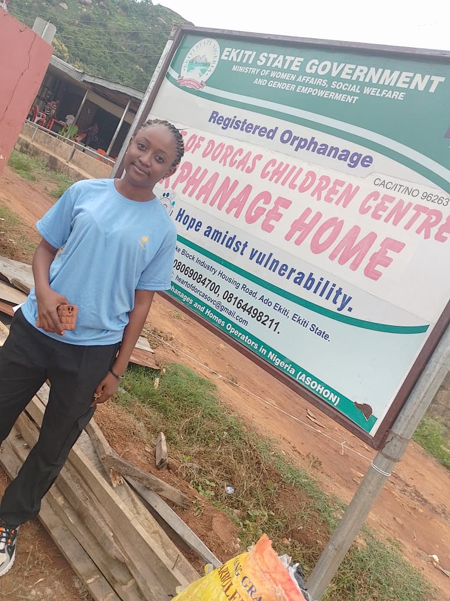
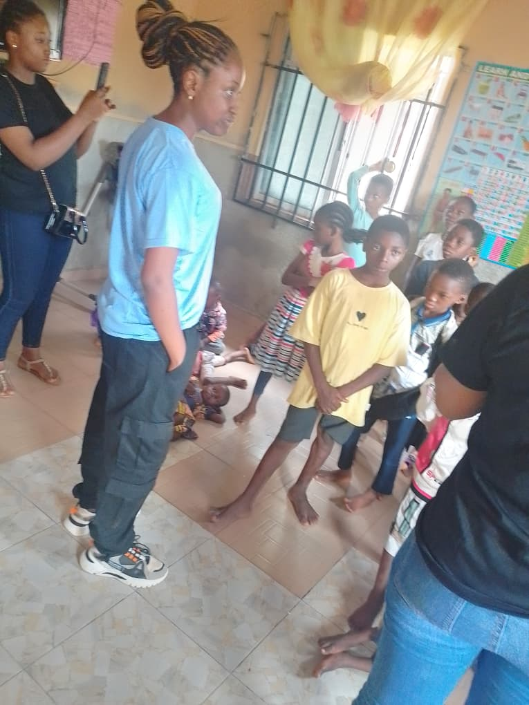

Spiritual Growth First
Making spiritual growth the foundation of nurturing tender hearts.
Tender Hearts Initiative · Nigeria
A safe space to grow through vulnerability, find healing, and become people who bring hope and care into their world.


A place to be nurtured
Established in June 2023, Tender Hearts Initiative grew from compassion for vulnerable people and a desire to offer encouragement, support, and care.
Beginning with orphanage outreaches and online spaces for encouragement and prayer, the initiative continues to nurture spiritual growth and healing.
Discover our storyOur purpose
We believe vulnerability can be met with care, and that growth can help tender hearts become strong, self-loving people.
Read our mission and visionOur mission
“To nurture tender hearts by putting spiritual growth first, while allowing vulnerability and allowing growth through mentorship on sexual purity, self-love, personal development and healing.”
What guides us
Six values shape the way Tender Hearts Initiative nurtures people and communities.
Making spiritual growth the foundation of nurturing tender hearts.
Making room for vulnerability to be met with compassion and care.
Supporting a journey of growth into strength and self-love.
Encouraging sexual purity and honoring the dignity of every person.
Encouraging people to grow in care and love for themselves.
Putting compassion into practice through support and outreach.
Where care meets community
Our outreach makes room for connection, encouragement, and support in different community settings.

Learning & encouragement
Connecting with children and teenagers through school outreach and encouragement.

Care & connection
A key part of our beginnings: offering care, support, and encouragement through outreach.
Together in community
Bringing compassion and support to women, widows, and communities.
Our vision
“A world where children, teenagers, girls, women and communities who are by nature tender-hearted and vulnerable, are nurtured spiritually and allowed to grow into strong, pure and self-loving people who impact their world.”
Our reach
Tender Hearts Initiative works across Ekiti State, Ogun State, Lagos State, and beyond.
Be part of the story
Explore ways to support outreach or start a conversation about partnership.